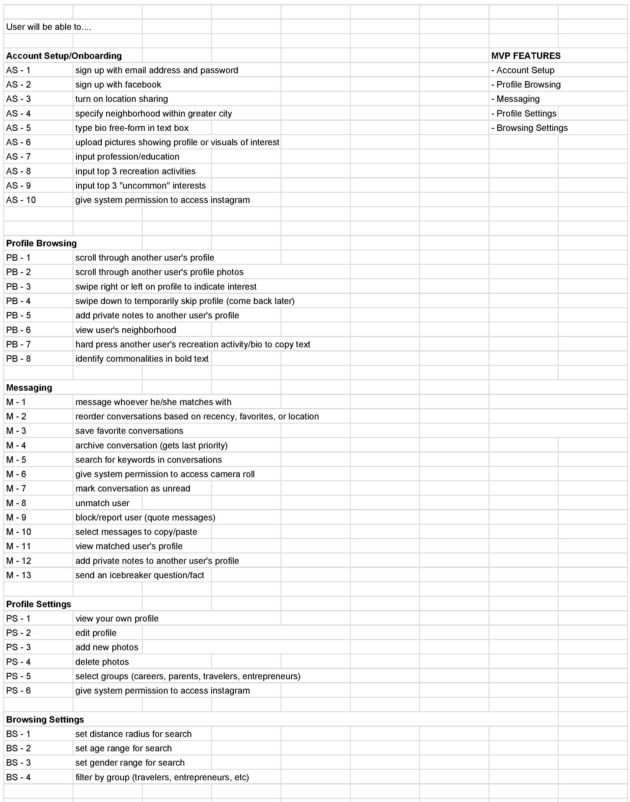

Story behind the app
Ever felt alone in the city? You’re not the only one. Between recent graduates, people who recently went through a breakup, and those new to the area, there are plenty of people who could use a friend. (Over 40,000 people moved into Los Angeles in 2016, and certainly not all of those transplants came with fully formed support networks!)
While some find it easy to leverage their personal networks to form new connections, it’s not quite so simple for everyone. For my Springboard capstone project, I chose to tackle this issue by redesigning a friend-finder mobile application.
Mobile applications such as Bumblebff, Hey! Vina, and Patook enable users to “match” with others in their area and converse to develop platonic friendships. Profiles, which include a combination of personal user photos (usually linked to Facebook) and self-written descriptions, are used as vehicles to share information and identify common goals/interests. Users enter the mile radius they would like to cast their friend search, enabling them to view users located within that radius. Upon viewing each profile, users indicate whether or not they are interested in talking to someone. Mutual interest will open up eligibility to chat together. It is up to the matched users to establish and maintain conversation and, from there, escalate to an in-person meeting. Through this process, users can find those with similar interests or hobbies and strike up a connection.
Objective:
Validate the desire for a friend-finder app and create the first prototype for usability tests
Research and planning
What I wanted to explore:
- Current friend-finder applications and their functionality/design
- How people seek out and maintain new friendships
- What qualities people look for when making new friends
- How familiar people are with existing friend-finder applications
- What may hinder someone from using a friend-finder application
- Frustrations with existing friend-finder applications
- What people are willing to share about themselves for the purpose of making friends
Competitors
I evaluated the most notable competitors in the field, as well as the original Patook application.
Bumblebff demonstrated its strengths over the other two apps, based on the heuristics I evaluated (user control/freedom, flexibility and efficiency of use, and aesthetic and minimalist design).
While Bumblebff and Hey! Vina only allow for same-sex friendship matching, Patook allows users the option of matching with males and/or females.
Screener survey
I considered the possible sources of information for evaluating Patook: those looking to expand their friend group, the app’s current user base, and the app’s developers and team. I chose to focus on the group that felt their social circle was somehow incomplete in some way, because it was the richest source of information while still being specific to finding friends.
To determine interview participants, I wrote questions for a screener survey to gauge how satisfied people were with the size and quality of their social circles. Questions such as “How do you usually meet new people?” were written to identify current methods of expanding their personal network, and how much individual effort each method requires.
This survey also provided insight on the qualities people sought in friends. Loyalty, trustworthiness, empathetic, authenticity, reliability, kindness, and similar values were some of the ones that came up. This helped to form tentative "how might I" statements to guide my design thoughts:
- How might I help bring people together when they aren't aware they have common interests to talk about?
- How might I demonstrate to someone that their trust is well-placed?
- How might I encourage one to display their authentic self to someone new?
User interview insights
Common frustrations:
- While surface commonalities (same hometown or heritage) help to quickly identify other commonalities, lacking common interests beyond those will limit the scope of the potential friendship.
- Those with experience with friend-finder apps mentioned that they had had difficulty finding others with common interests, and that receiving responses took a while after the mutual match was first declared.
Common behaviors:
- Millennials are very comfortable with texting as a convenient, casual way to quickly get their thoughts across.
- All confirmed that they view one-on-one interactions as more intimate, so prefer to get to know newer friends one-on-one before integrating them into a larger group.
- Most people prefer in-person interactions but will use texting or phone calls to quickly plan and set their next meetup.
Common goals:
- Most find it fairly important overall to share common interests with friends.
- While it isn’t a dealbreaker for friendships that already exist, common interests are used to quickly establish a common ground and an ever-evolving source of conversation besides regular life updates.
- Most expressed excitement at the prospect of being able to meet with new people who shared interests that few of their other friends held.
- Friend-finder apps are best for those who live far from their original social circle (newly moved) or who have recently changed circumstances.
Solution
With this in mind, I set out to design an app that would focus on users’ common interests but also shine a spotlight on the interests unique to each person, in hopes that it would inspire new interests and different routes of conversation.
Designing for the users
I created three personas that represent users’ frustrations and goals as indicated from research and interviews. My primary persona Rena is a recent graduate who has moved to Los Angeles and wants to explore her new city. She epitomizes the desire of those who have moved far from their original social circle and are searching for companions for local activities.
My other two personas, Elaine and Kevin, represent other segments of the population who crave companionship - Elaine wants to find friends her age who are also new moms, while Kevin wants to get in touch with people who have similar hobbies.

I used these personas' behaviors and goals to inform my design decisions. When crafting the user stories, I considered what features would be most important to accomplish my objective of bringing people together while highlighting individual interests.
Addressing self-conscious users like Rena, I mitigated the "fear of rejection" driving force by including an icebreaker message feature. By using quick, easy-to-access icebreaker greetings/questions, users would be able to initiate conversation with new matches with less worry about what to say or ask at the beginning of conversation.

The user stories would help to prevent scope creep, as a handy reference tool throughout the sketching and prototyping processes.
Design
iOS application, from research and ideation to prototype and usability testing
Sketching process
I sketched wireframes and flows, considering what interface design patterns might be most appropriate for the target audience.
I synthesized the feedback from my interview participants and the results from my competitive analysis to form a solution. I knew from my research and heuristics evaluation that the resulting app needed to allow power users the freedom to use the app’s nooks and crannies, while remaining easy and approachable enough for first-time users to not be intimidated by the sheer scope of the app.
Based on research about how smartphone users hold their phones, I knew a bottom navigation bar would be most accessible. I sketched out a few different options for the navigation bar, but one thing stayed consistent: Tabs were ordered by priority, starting with the Mutual Match screen and Conversations screen.
Important call-to-action buttons were placed in the bottom half of each screen. Otherwise, users who hold their phone in one hand and use the thumb of that same hand to touch the screen would have difficulty accessing buttons at the top of the screen.
Developing the prototype
Generating the prototype took longer than anticipated – while I was not trying to spend too much time on the visual design aspect, I did want to ensure that the users of the first prototype received sufficient guidance through visual and textual cues. Upon creating my high-fidelity wireframes, I began putting more thought into word choice.
Most of my efforts during the sketching process were concentrated on how information would be most effectively communicated through the visuals. Keeping in mind the “call to action” I wanted users to take on each page and the hotspots most easily accessible on a user’s smartphone, I settled on a Z-formation structure for most of my pages, with a bottom navigation bar to make it convenient for thumbs.
Check out the clickable prototype here.
Validation
I validated the design with feedback from the same participants I'd interviewed during my research process.
I conducted usability tests over the course of several days, using a script to guide users' interactions with the prototype. I organized user feedback and concerns by section: Login/Signup, Conversations, Profiles, and Settings.
Overall, prototype feedback ranged from compliments about the design’s minimalistic and “clean” look/feel to confusion surrounding some of the functionality. One section that particularly confounded certain users was the “Use My Location” option during onboarding - they were unsure how selecting that button would differ from manually entering their zip code below.
I addressed these concerns by tabulating a list and prioritizing them based on ultimate functionality and purpose in the process. By doing so, I concentrated my efforts only on the essentials rather than getting distracted by feature/scope creep.
Reflection and next steps
Limited functionality in Invision: I had greater ambitions for this utility app, which were unfortunately beyond the scope of Invision’s functionality. If given the opportunity to work with a developer, I would like to implement more advanced interaction design: transition screens for swiping left-right to more clearly indicate how a user is swiping, allowing them the satisfaction that they are swiping the way they intended to, swiping up to temporarily skip a profile, and a filter for different community groups to narrow search options to only those with certain characteristics.
Details
Context
Capstone project for Springboard UX Design course
Date
January 2018 - March 2018
Timeframe
10 hours researching
7 hours designing for user
5 hours sketching
15 hours prototyping
3 hours usability testing
Tools
Typeform, Microsoft Visio, Adobe Photoshop, Invision
Role
Sole UX Designer
Deliverables
Heuristics analysis, user personas, empathy maps, user flows, user stories, sketches, card-sorting, high-fidelity wireframes, clickable prototype, style guide, usability testing analysis
Devices
iOS
{kind=link}
{kind=link}
{kind=link}
{kind=link}